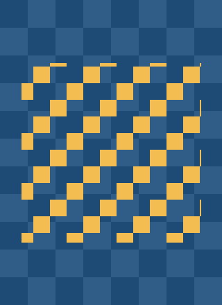

Pasatiempos imprimibles · Soluciones al final
Dificultad: facil
| 9 | 1 | 5 | 8 | |||||
| 1 | 2 | 3 | 7 | 9 | 6 | |||
| 3 | 8 | 9 | 6 | 1 | 2 | 5 | ||
| 6 | 7 | 4 | 5 | 3 | ||||
| 5 | 3 | 7 | 1 | 2 | ||||
| 3 | 8 | 7 | 9 | 6 | ||||
| 7 | 9 | 4 | 1 | |||||
| 2 | 5 | 3 | 8 | 9 | ||||
| 8 | 7 | 6 | 4 | 2 | 5 | 3 |
Dificultad: medio
| 7 | 9 | 2 | ||||||
| 4 | 6 | 7 | 5 | 2 | ||||
| 8 | 3 | 2 | 4 | 5 | 9 | |||
| 2 | 6 | 3 | 1 | |||||
| 4 | 2 | 8 | ||||||
| 6 | 3 | 1 | 4 | 2 | ||||
| 1 | 6 | 5 | 4 | 9 | 3 | 7 | ||
| 3 | 2 | 8 | 5 | |||||
| 5 | 3 | 2 |
Dificultad: facil
| 7 | 5 | 8 | 9 | |||||
| 2 | 6 | 8 | 9 | |||||
| 3 | 4 | 7 | 2 | |||||
| 7 | 3 | 6 | 8 | 9 | 5 | 1 | ||
| 7 | 3 | 6 | ||||||
| 4 | 1 | 6 | 9 | 2 | 8 | |||
| 3 | 1 | 7 | 9 | 2 | 6 | 8 | ||
| 2 | 6 | 9 | 4 | 5 | 1 | 7 | ||
| 5 | 8 | 7 | 1 | 6 | 9 |
Dificultad: medio
| 5 | 4 | 6 | 8 | 2 | 9 | 3 | ||
| 8 | 2 | 1 | 7 | 4 | 5 | |||
| 1 | 3 | 6 | ||||||
| 6 | 2 | 5 | ||||||
| 1 | 9 | 3 | 6 | |||||
| 7 | 5 | 6 | 4 | 8 | 1 | |||
| 7 | 6 | |||||||
| 4 | 8 | 1 | 7 | 3 | ||||
| 4 | 7 | 1 | 9 |
Dificultad: facil
| 7 | 4 | 8 | 3 | 6 | 5 | |||
| 1 | 7 | 4 | 8 | |||||
| 4 | 2 | 5 | 1 | 7 | ||||
| 9 | 3 | 1 | 6 | 8 | ||||
| 3 | 1 | 6 | 7 | 2 | ||||
| 5 | 6 | 8 | 4 | 1 | ||||
| 4 | 2 | 7 | 6 | 1 | 9 | |||
| 2 | 7 | 6 | 1 | 9 | 5 | |||
| 1 | 9 | 8 | 4 | 2 | 7 |
Dificultad: medio
| 5 | 2 | 7 | 9 | 8 | ||||
| 1 | 9 | 4 | 5 | 6 | ||||
| 7 | 9 | 6 | 2 | |||||
| 9 | 5 | 2 | ||||||
| 5 | 8 | 2 | 7 | |||||
| 1 | 6 | 7 | 3 | 9 | 5 | 4 | ||
| 9 | 3 | 2 | ||||||
| 5 | 8 | 4 | 3 | |||||
| 2 | 6 | 4 | 1 | 8 |
Respuestas de los pasatiempos anteriores.
| 4 | 9 | 6 | 1 | 2 | 5 | 3 | 8 | 7 |
| 5 | 1 | 2 | 3 | 8 | 7 | 9 | 6 | 4 |
| 7 | 3 | 8 | 9 | 6 | 4 | 1 | 2 | 5 |
| 6 | 7 | 9 | 4 | 1 | 2 | 5 | 3 | 8 |
| 8 | 5 | 3 | 7 | 9 | 6 | 4 | 1 | 2 |
| 2 | 4 | 1 | 5 | 3 | 8 | 7 | 9 | 6 |
| 3 | 2 | 5 | 8 | 7 | 9 | 6 | 4 | 1 |
| 1 | 6 | 4 | 2 | 5 | 3 | 8 | 7 | 9 |
| 9 | 8 | 7 | 6 | 4 | 1 | 2 | 5 | 3 |
| 7 | 5 | 9 | 8 | 2 | 3 | 1 | 4 | 6 |
| 4 | 1 | 6 | 7 | 9 | 5 | 3 | 8 | 2 |
| 8 | 3 | 2 | 4 | 6 | 1 | 5 | 7 | 9 |
| 2 | 7 | 5 | 6 | 3 | 8 | 4 | 9 | 1 |
| 9 | 4 | 1 | 2 | 5 | 7 | 8 | 6 | 3 |
| 6 | 8 | 3 | 9 | 1 | 4 | 7 | 2 | 5 |
| 1 | 6 | 8 | 5 | 4 | 9 | 2 | 3 | 7 |
| 3 | 2 | 7 | 1 | 8 | 6 | 9 | 5 | 4 |
| 5 | 9 | 4 | 3 | 7 | 2 | 6 | 1 | 8 |
| 6 | 7 | 2 | 5 | 8 | 9 | 1 | 4 | 3 |
| 1 | 4 | 3 | 2 | 6 | 7 | 8 | 9 | 5 |
| 8 | 9 | 5 | 3 | 1 | 4 | 6 | 7 | 2 |
| 7 | 3 | 6 | 8 | 9 | 2 | 4 | 5 | 1 |
| 9 | 2 | 8 | 1 | 4 | 5 | 7 | 3 | 6 |
| 4 | 5 | 1 | 6 | 7 | 3 | 9 | 2 | 8 |
| 3 | 1 | 7 | 9 | 2 | 6 | 5 | 8 | 4 |
| 2 | 6 | 9 | 4 | 5 | 8 | 3 | 1 | 7 |
| 5 | 8 | 4 | 7 | 3 | 1 | 2 | 6 | 9 |
| 5 | 4 | 6 | 8 | 2 | 9 | 3 | 7 | 1 |
| 8 | 9 | 2 | 1 | 7 | 3 | 4 | 6 | 5 |
| 1 | 3 | 7 | 5 | 6 | 4 | 9 | 2 | 8 |
| 6 | 8 | 4 | 2 | 9 | 1 | 5 | 3 | 7 |
| 2 | 1 | 9 | 7 | 3 | 5 | 8 | 4 | 6 |
| 7 | 5 | 3 | 6 | 4 | 8 | 1 | 9 | 2 |
| 9 | 7 | 1 | 3 | 5 | 6 | 2 | 8 | 4 |
| 4 | 2 | 8 | 9 | 1 | 7 | 6 | 5 | 3 |
| 3 | 6 | 5 | 4 | 8 | 2 | 7 | 1 | 9 |
| 9 | 1 | 7 | 4 | 8 | 3 | 6 | 2 | 5 |
| 6 | 2 | 5 | 9 | 1 | 7 | 4 | 8 | 3 |
| 4 | 8 | 3 | 6 | 2 | 5 | 9 | 1 | 7 |
| 7 | 9 | 2 | 3 | 4 | 1 | 5 | 6 | 8 |
| 3 | 4 | 1 | 5 | 6 | 8 | 7 | 9 | 2 |
| 5 | 6 | 8 | 7 | 9 | 2 | 3 | 4 | 1 |
| 8 | 5 | 4 | 2 | 7 | 6 | 1 | 3 | 9 |
| 2 | 7 | 6 | 1 | 3 | 9 | 8 | 5 | 4 |
| 1 | 3 | 9 | 8 | 5 | 4 | 2 | 7 | 6 |
| 6 | 4 | 5 | 3 | 2 | 1 | 7 | 9 | 8 |
| 3 | 1 | 2 | 8 | 9 | 7 | 4 | 5 | 6 |
| 8 | 7 | 9 | 6 | 5 | 4 | 1 | 2 | 3 |
| 7 | 9 | 3 | 4 | 8 | 5 | 2 | 6 | 1 |
| 4 | 5 | 8 | 1 | 6 | 2 | 9 | 3 | 7 |
| 1 | 2 | 6 | 7 | 3 | 9 | 5 | 8 | 4 |
| 9 | 3 | 1 | 5 | 7 | 8 | 6 | 4 | 2 |
| 5 | 8 | 7 | 2 | 4 | 6 | 3 | 1 | 9 |
| 2 | 6 | 4 | 9 | 1 | 3 | 8 | 7 | 5 |